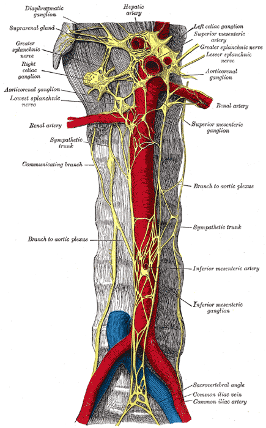

Página 9 · Parte C · Nervos e linfa
Quem contrai o esfíncter interno da uretra?
Hipogástrico superior e inferior
Quem contrai a bexiga e lubrifica a vagina? Se você misturar superior e inferior, a continência vira confusão de prova.
Autônomo: o que não depende do desejo
A inervação autônoma é a que não depende do desejo voluntário. Envolve o plexo hipogástrico superior, o plexo hipogástrico inferior, o plexo vesical, o plexo útero-vaginal e o plexo retal. Nervos: esplâncnicos lombares, sacrais e pélvicos, e nervos hipogástricos. Funções simpáticas e parassimpáticas atingem reto, bexiga, uretra, útero, ovários e vagina.
O mais cobrado em residência, neste recorte: hipogástrico superior e hipogástrico inferior.
Hipogástrico superior e o esfíncter uretral interno
O hipogástrico superior associa-se à contração do esfíncter interno da uretra — ponte com alterações miccionais.
Hipogástrico inferior: para e simpático
No hipogástrico inferior, o componente parassimpático associa-se à lubrificação vaginal e à contração da bexiga. Na lógica da continência (↗A7): o parassimpático favorece perda urinária via contração detrusora/bexiga — e quem carrega isso no mapa deste recorte é o hipogástrico inferior (PS). O componente simpático do inferior associa-se à contração da musculatura lisa das vísceras pélvicas.
Ficha mínima + par somático/autônomo
Par a guardar: somático → pudendo (vulva/períneo) · autônomo → hipogástricos (micção/visceral).
| Plexo / componente | Função destacada |
|---|---|
| Hipogástrico superior | Contração do esfíncter interno da uretra |
| Hipogástrico inferior — parassimpático | Contração da bexiga; lubrificação vaginal |
| Hipogástrico inferior — simpático | Contração do músculo liso das vísceras pélvicas |
| Somático — nervo pudendo | Sensitivo vulva/períneo; alvo de bloqueio |

Atlas neural: tronco simpático abdominal e plexos hipogástricos.
Plate 847 from Gray's Anatomy (20th ed., 1918), by Henry Vandyke Carter (after Henle). Public domain. Source: https://commons.wikimedia.org/wiki/File:Gray847.png
Quiz — fixação
Contração do esfíncter interno da uretra associa-se sobretudo a:
- Gabarito A. O hipogástrico superior associa-se à contração do esfíncter interno da uretra.
- (B) pudendo é somático perineal, não autônomo do esfíncter interno.
- (C) linfonodo é linfa, não nervo.
- (D) ovárica é artéria, não plexo nervoso.
- Por que cair em B: “esfíncter” lembra continência e o aluno puxa o pudendo, mas o interno é liso/autônomo.
No hipogástrico inferior, o parassimpático associa-se a:
- Gabarito B. O parassimpático do hipogástrico inferior contrai a bexiga e lubrifica a vagina.
- (A) esse é o papel do hipogástrico superior, não do inferior.
- (C) drenagem venosa é tema dos vasos, não do autônomo.
- (D) coleta citológica é procedimento, não função do plexo.
- Por que cair em A: “esfíncter” é a âncora de micção e seduz a errar o plexo responsável.